- Извекова Мария Петровна
- студентка 3-го курса
- Российский университет дружбы народов
- 1132226460@pfur.ru

Реализовать модель “хищник-жертва” в xcos.
Модель «хищник–жертва» (модель Лотки — Вольтерры) представляет собой модель межвидовой конкуренции. В математической форме модель имеет вид:
где x — количество жертв; y — количество хищников; a,b , c,d — коэффициенты, отражающие взаимодействия между видами: a— коэффициент рождаемости жертв; b — коэффициент убыли жертв; c— коэффициент рождения хищников; d— коэффициент убыли хищников.
Зафиксируем начальные данные: a = 2, b = 1, c = 0, 3, d = 1, x(0) = 2, y(0) = 1. В меню Моделирование, Задать переменные окружения зададим значения коэффициентов a, b, c, d (рис. [-@fig:001]).
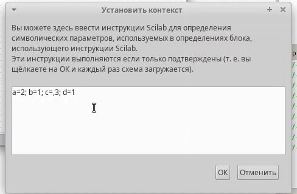
Для реализации модели в дополнение к блокам CLOCK_c, CSCOPE, TEXT_f, MUX, INTEGRAL_m, GAINBLK_f, SUMMATION, PROD_f потребуется
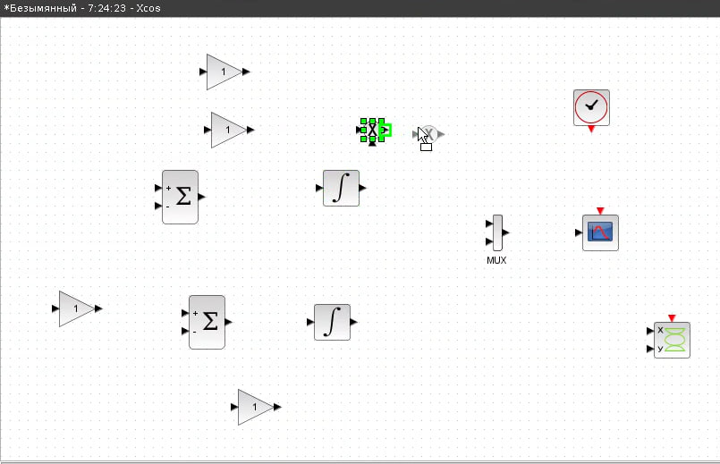
Готовая модель «хищник–жертва» представлена на рис. (рис. [-@fig:002]).
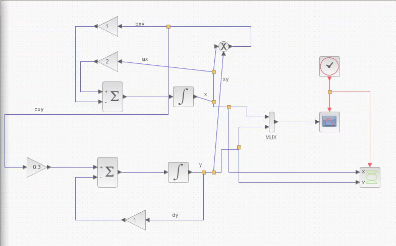
В параметрах блоков интегрирования необходимо задать начальные значения x(0) = 2, y(0) = 1
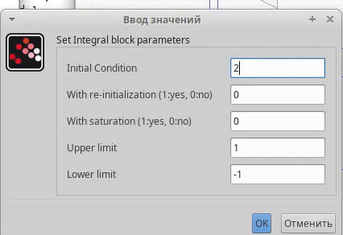
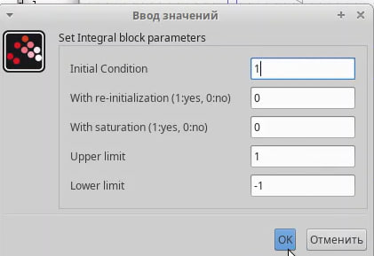
В меню Моделирование, Установка необходимо задать конечное время интегрирования, равным времени моделирования: 30.
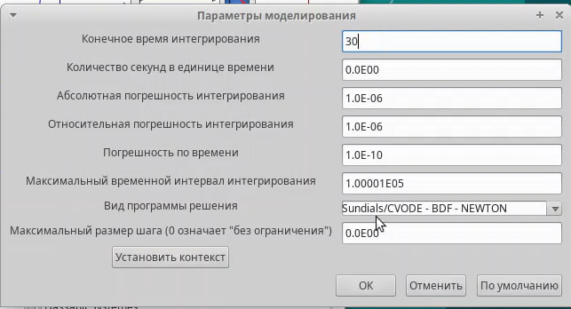
Результаты моделирования представлен на рис (рис. [-@fig:007])
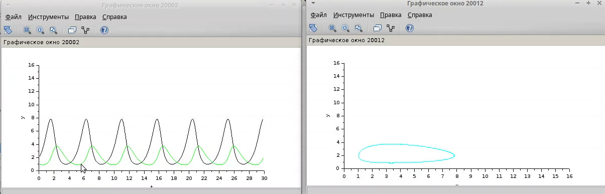
Для реализации модели (рис. [-@fig:002]) с помощью языка Modelica потребуются следующие блоки xcos: CLOCK_c, CSCOPE, CSCOPXY, TEXT_f, MUX, CONST_m и MBLOCK (Modelica generic).
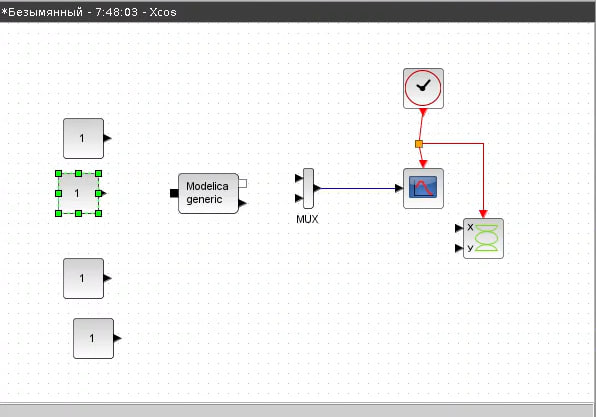
Как и ранее, задаём значения коэффициентов a, b, c, d. Параметры блока Modelica представлены на (рис. [-@fig:010]) . Переменные на входе (“a”, “b”, “c”, “d”) и выходе (“x”, “y”) блока заданы как внешние (“E”).
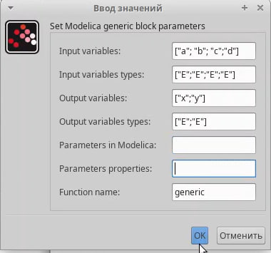
class generic ////automatically generated //// //input variables Real a,b,c,d; //output variables // Real x,y; ////do not modif above this line //// Real x(start=2), y(start=1); // Модель хищник-жертва equation der(x) = ax - bxy; der(y) = cxy - dy; end generic;
Готовая модель «хищник–жертва» представлена на рис. [-@fig:011]
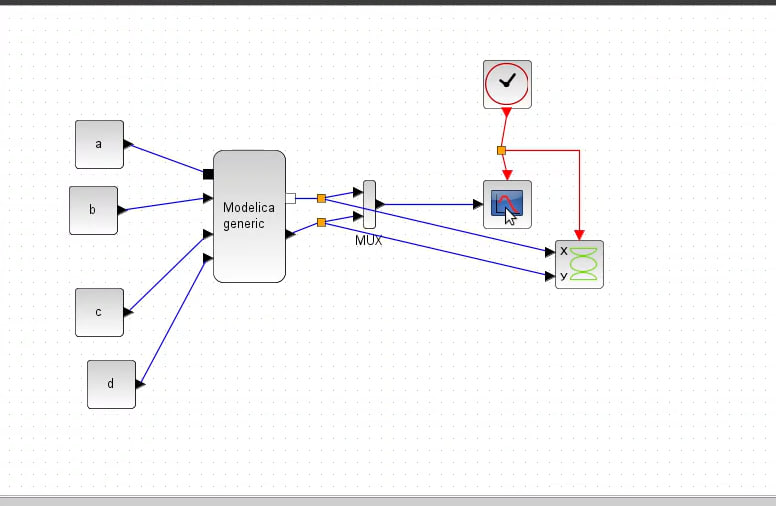
Результат второго моделирования представлен на рис (рис. [-@fig:012])
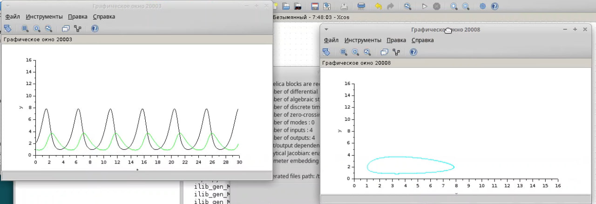
Реализуем модель «хищник – жертва» в OpenModelica. Построим графики изменения численности популяций и фазовый портрет.
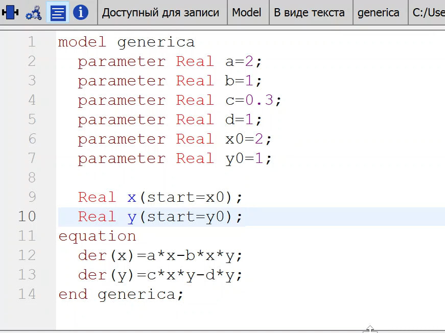
Выполним симуляцию, поставим конечное время 30с. Получим график изменения численности хищников и жертв (рис. [-@fig:014]), а также фазовый портрет (рис. [-@fig:015]).
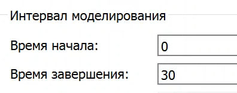
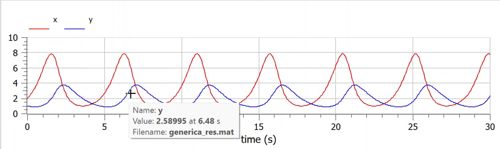
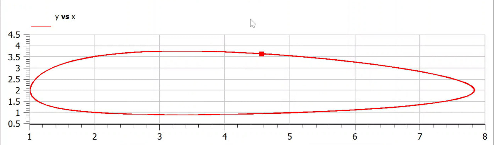
В процессе выполнения данной лабораторной реализована модель “хищник-жертва” в xcos.